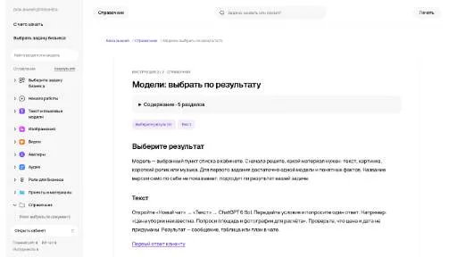
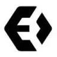
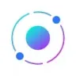
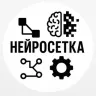
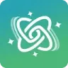
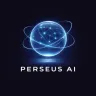
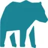

МолекулаАгрегаторы нейросетей
Молекула объединяет модели для текстов, изображений, видео и музыки. В одном аккаунте можно подобрать инструмент под этап работы, сохранить инструкции проекта и использовать готовые роли.
К задаче в МолекулеАгрегаторы нейросетей: Сравните доступные модели, отдельные лимиты и расход кредитов. Одна подписка не обязательно включает одинаковый объём работы со всеми инстру
Молекула собирает разные модели в одном рабочем интерфейсе. Начните с небольшого задания и заранее определите критерии ответа, чтобы выбирать по полезности результата для вашей задачи.
Из этого описания услуги подготовь ответ клиенту до ста слов. Сохрани ограничения по доставке и возврату. Покажи, какие сведения отсутствуют и должны быть уточнены человеком.

Молекула объединяет модели для текстов, изображений, видео и музыки. В одном аккаунте можно подобрать инструмент под этап работы, сохранить инструкции проекта и использовать готовые роли.
К задаче в Молекуле
Albus AI организует исследование материалов в рабочем пространстве. Документы и другие сведения становятся контекстом, по которому можно продолжать разбор темы.
«AYLIEN» помогает представить данные на диаграмме.
Сравнивать «CoinLore» с другими инструментами раздела «Агрегаторы нейросетей» удобнее на одинаковом исходном материале.
В инструменте «Krater» можно собирать видеосцену по описанию или визуальному исходнику. Ещё одно направление работы: получать изображения из словесного задания.
Syntx AI предоставляет общий доступ к разным нейросетям через веб-интерфейс и Telegram-бота. Среди моделей представлены языковые помощники и средства визуальной генерации. Пользователь выбирает нужный инструмент внутри агрегатора; условия расчётов рассчитаны на российские карты, включая доступные в России платёжные способы.
«TopAI.tools» помогает находить материалы по вопросу.
«AI Wizard» представлен в разделе «Агрегаторы нейросетей». При выборе проверьте нужную операцию и условия работы с результатом.
Для «AI-Search.io» сначала определите свою задачу и требуемый результат. Карточка относится к направлению «Поиск информации».
«AiToolHunt» представлен в разделе «Поиск информации». При выборе проверьте нужную операцию и условия работы с результатом.
Сравнивать «Lummi» с другими инструментами раздела «Изображения» удобнее на одинаковом исходном материале.
Nexa AI предоставляет коллекцию ИИ-инструментов, организованных по категориям. В продукте также описаны генерация текста и общение с чат-ботами, а также создание изображений. Эти возможности связывают просмотр доступных средств и работу над выбранным пользовательским материалом в рамках общей платформы.
Сравнивать «Prompt Journey» с другими инструментами раздела «Генерация изображений» удобнее на одинаковом исходном материале.
«SuperTools» представлен в разделе «Поиск информации». При выборе проверьте нужную операцию и условия работы с результатом.

Toolify рассчитан на задачи, где нужно исследовать тему и разбирать найденную информацию. Ещё одно направление работы: использовать разные модели через общее рабочее пространство.
VLEX AI собирает текстовые, визуальные и голосовые модели в общем веб-интерфейсе. Пользователь обращается к разным нейросетям из одного аккаунта, выбирая инструмент для нужного материала. Сервис ориентирован на российскую аудиторию и поддерживает оплату картой российского банка.
«BoostAITraffic» представлен в разделе «Бизнес». При выборе проверьте нужную операцию и условия работы с результатом.

EvoLink рассчитан на задачи, где нужно собирать видеосцену по описанию или визуальному исходнику. Ещё одно направление работы: получать изображения из словесного задания.
Для «GPTs Hunter» сначала определите свою задачу и требуемый результат. Карточка относится к направлению «Поиск информации».

Magai объединяет ИИ-модели и средства подготовки контента в одном продукте. Среди функций есть транскрибирование видео YouTube, создание изображений и ИИ-персонажи. Совместная работа команды дополняет использование этих инструментов, связывая текстовые и визуальные задачи с обсуждением материалов участниками.

Scale AI предоставляет средства работы с данными в процессе машинного обучения. Среди описанных услуг есть аннотирование разных видов материалов. Отдельно представлены изображения и видео, а также данные трёхмерных датчиков, для которых подготавливается разметка в рамках обучения моделей.
Для «AI Scout» сначала определите свою задачу и требуемый результат. Карточка относится к направлению «Поиск информации».
«GptHub.best» помогает изучать выбранный язык.

В инструменте «Relevance AI» можно связывать действия в автоматизированный процесс. Ещё одно направление работы: готовить ответы на обращения клиентов.
Для «Aitoolmall.com» сначала определите свою задачу и требуемый результат. Карточка относится к направлению «Поиск информации».
Для «Assist Desk» сначала определите свою задачу и требуемый результат. Карточка относится к направлению «Поиск информации».
«DoMore AI» представлен в разделе «Агрегаторы нейросетей». При выборе проверьте нужную операцию и условия работы с результатом.
Для «GPT Demo» сначала определите свою задачу и требуемый результат. Карточка относится к направлению «ИИ-ассистент».
Easy with AI собирает инструменты и услуги, связанные с искусственным интеллектом, и помогает находить варианты для конкретной задачи. Такой каталог можно использовать для первоначального отбора. Затем сверяйте функцию и условия на странице выбранного продукта; наличие описания не подтверждает текущую работоспособность сервиса или поддержку нужного способа доступа.

Futurepedia относится к инструментам, которые помогают исследовать тему и разбирать найденную информацию. Ещё одно направление работы: использовать разные модели через общее рабочее пространство.
Для «AIcyclopedia» сначала определите свою задачу и требуемый результат. Карточка относится к направлению «Промты и промт-инжиниринг».

CrewAI служит средой для создания автоматизаций с участием ИИ-агентов. Разработчик может опираться на готовые модели и агентов либо собирать собственное решение открытыми инструментами. Основная задача среды состоит в организации связанной работы нескольких исполнителей, когда отдельные действия объединяются в общий процесс.

i10X используют, чтобы собирать видеосцену по описанию или визуальному исходнику. Ещё одно направление работы: выполнять задачи с веб-страницами.
Сравнивать «iNCSAI List» с другими инструментами раздела «Поиск информации» удобнее на одинаковом исходном материале.

Media.io относится к инструментам, которые помогают готовить музыкальную композицию по заданию. Ещё одно направление работы: собирать видеосцену по описанию или визуальному исходнику.

OpenRouter объединяет доступ к моделям через API и позволяет управлять выбором провайдера. Помогает подключать ИИ к приложению и контролировать условия маршрутизации запросов.
Сравнивать «SaaS AI tools» с другими инструментами раздела «Агрегаторы нейросетей» удобнее на одинаковом исходном материале.
«Theee AI» представлен в разделе «Поиск информации». При выборе проверьте нужную операцию и условия работы с результатом.
«Whattheai.tech» представлен в разделе «Агрегаторы нейросетей». При выборе проверьте нужную операцию и условия работы с результатом.

Нейросетка | Sora2 | Nano Banana относится к инструментам, которые помогают собирать видеосцену по описанию или визуальному исходнику. Ещё одно направление работы: получать изображения из словесного задания.

AI Fiesta полезен для сопоставления ответов нескольких моделей внутри одного интерфейса. Чтобы сравнение имело смысл, исходный запрос и условия задачи нужно сохранять одинаковыми.
«AI Radar» помогает исправлять и оформлять фотографии. «AI Radar» также перерабатывает формулировки написанного текста.
«OneSub» представлен в разделе «Продуктивность». При выборе проверьте нужную операцию и условия работы с результатом.

Perseus | 500 AI используют, чтобы собирать видеосцену по описанию или визуальному исходнику. Ещё одно направление работы: использовать разные модели через общее рабочее пространство.
Сравнивать «Unify» с другими инструментами раздела «ИИ-ассистент» удобнее на одинаковом исходном материале.
«FreeAikit.org» готовит визуальные материалы по заданию. «FreeAikit.org» разбирает поисковые запросы для работы с контентом.
«Mango AI» представлен в разделе «Поиск информации». При выборе проверьте нужную операцию и условия работы с результатом.

MindsHub рассчитан на задачи, где нужно связывать действия в автоматизированный процесс. Ещё одно направление работы: собирать видео с цифровым ведущим.
Страница 1 из 2
Молекула объединяет доступ к моделям для текстов, изображений, видео и музыки. Это удобно, когда материал проходит несколько этапов подготовки. Возможности каждого действия определяет выбранная модель: общий аккаунт не делает одинаковыми форматы результата и правила расходования доступного лимита.
Для программного продукта другой подход предлагает OpenRouter, который организует доступ через API и управление провайдерами. Сначала выберите способ работы: ручная подготовка контента в интерфейсе или подключение к собственному приложению. Их удобство оценивается по разным сценариям.
Для сравнения возьмите собственную фактическую карточку предмета мебели. В ней должны быть подтверждённые размеры и материал. Подготовьте короткое описание для покупателя, затем иллюстрацию к публикации. Проверяйте, не добавились ли вымышленные свойства и не изменилась ли форма товара.
Роли и сохранённые инструкции могут облегчать начало, но сведения о продукте требуется передавать отдельно. Перед новым этапом убедитесь, что он использует согласованный материал. Черновое предположение из текста не должно превращаться в видимую характеристику изображения.
Откройте итоговый файл в том инструменте, где будет публикация. Проверьте переносы, разрешение и нужный формат. Если агрегатор поддерживает несколько моделей одной задачи, сравните их на одинаковом задании. Смена запроса вместе с моделью мешает понять причину различий.
Уточните доступность нужной модели и ограничения конкретного подключения. Для внешнего API проверьте маршрут данных и допустимый резерв. Наличие общего каталога не гарантирует одинаковых прав или непрерывной работы всех вариантов. В рабочем процессе нужен способ сохранить готовый материал независимо от истории чата.
Для собственных приложений изучите API и интеграции, а для обработки на устройстве сопоставьте решения из категории инфраструктуры ИИ. Выбирайте по своему маршруту работы и возможности проверить каждую часть результата.